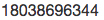

个人资料
- 昵称：zhuqling
- 姓名：朱青玲
- 性别：男
- 出生年份：1983
- 手机：
工作经历
广州棒谷网络有限公司
- 2017-至今，研发中心/财务平台开发负责人
- 2015，APP技术总监
- 2012，架构组经理
- 2009，.Net高级开发工程师
- 2008，PHP高级开发工程师
技能+项目
NodeJS
技能
- ES6
- Express + KOA
- MongoDB
- Redis：实现用户登录态，多设备在线机制，安全免密重登，轻量级消息队列
- MSSQL + MySQL
- etcd: 配置管理
- Kairosdb：时序数据库
- PM2
- Lodash
项目
- 多卖家电商后台系统
- 电商APP API
- 管理APP API: 管理宝, Test Buy后台 + 服务，合作平台，跟单，买手，物料开发
- 钉钉推送服务
- 云技术：AWS(国外), 青云，Leancloud, 云片，又拍云
Python
技能
项目
- 商品抓取：19个电商网站产品(amazon,rei等)
- 汇率抓取
前端
- Vue
- jQuery / Zepto
- Bootstrap + FrozenUI
- webpack
- H5与原生APP交互
- 微信小程序
综合技能
- Git + SVN
- Jenkins
- Docker
- ElasticSearch
- RabbitMQ
- Nginx
- 禅道, TAPD, Teambition
C#项目
- 仓库快速发货系统
- ERP系统
- eBay销售优化相关算法、自动化销售
- 关键字排名跟踪、自动价格跟踪
- 智能打折，打折自动继期
- SmartGallery智能展示窗
- 自动eBay订单下载，Paypal数据下载、更新发货状态
- DHL运单状态跟踪
- 产品高度关联Tag页面
PHP项目
- http://www.banggood.com 外贸电商网站创始
其它项目
- 小程序：卡集集，人脉深度
- 《osCommerce深度探密》电子书
- 《Zencart 源码剖析》电子书
- BestMatchAdvisor.com eBay排名分析软件
- 8款iOS APP